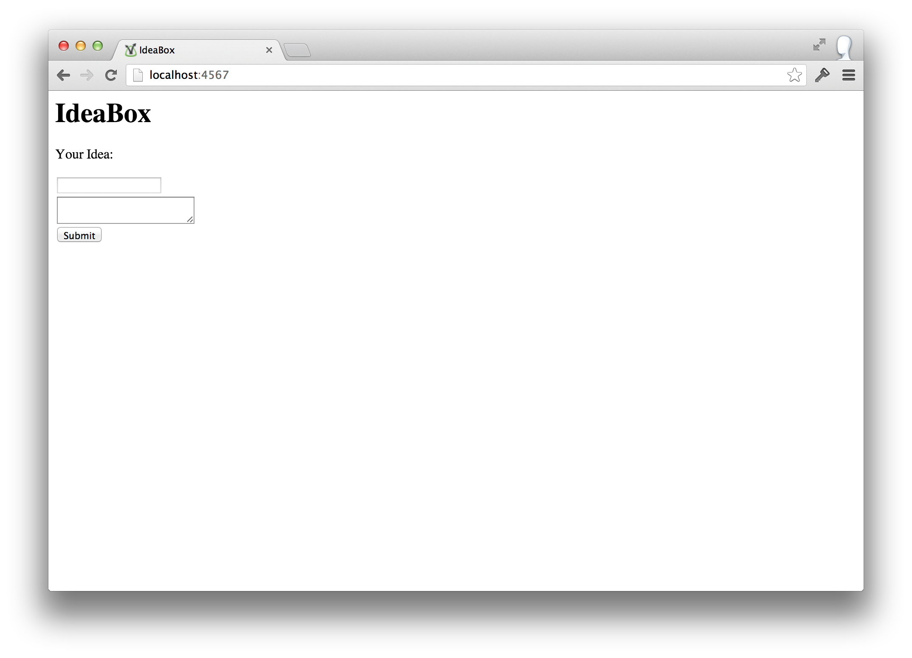
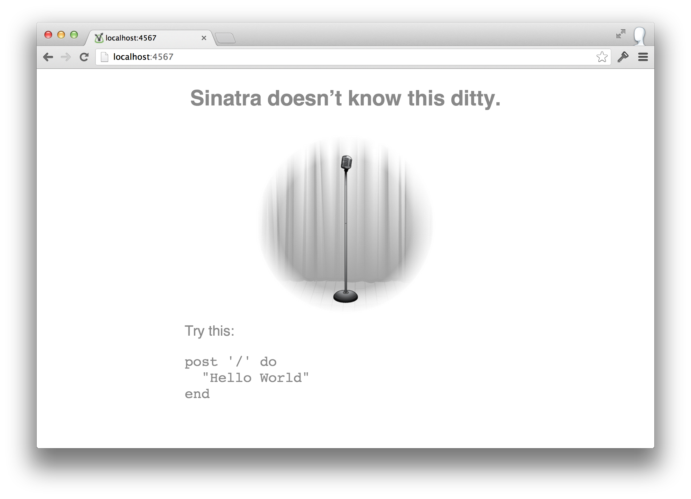

IdeaBox
Every developer has more ideas than time. As David Allen likes to say "the human brain is for creating ideas, not remembering them." Let’s build a system to record your good, bad, and awful ideas.
Goal Setting
Before You Begin
Coming into this tutorial you’ve got a solid understanding of fundamental TDD. You have some understanding of how the web works, but probably haven’t built web applications.
Process
This is a hybrid guided tutorial and independent work project. The text will walk you through the step-by-step process of building the fundamental functionality. Then the tutorial ends with a list of possible extensions. You should choose and implement several of these extensions to practice and refine the learnings from the tutorial.
Learning Goals
After completing this tutorial you should be able to:
- lay out a Sinatra application
- define routes/endpoints for that application
- use view templates to render HTML
- store data across requests with
YAML::Store - write a simple HTML form
- read and react to HTTP parameters from the form
- explain the statelessness of the HTTP request/response cycle
I0: Getting Started
Environment Setup
For this project you need to have setup:
- Ruby 2.1
- Ruby’s Bundler gem
File/Folder Structure
Let’s start our project with the minimum and build up from there. We need:
- a project folder
- a
Gemfilein that folder - an
app.rbfile in that folder
Gemfile
The Gemfile is used to express the dependencies of our application. We need the Sinatra library for our app to work, so we add it to the Gemfile:
1 2 3 | |
And save it.
Install the Dependency
Return to your terminal and, from your project directory, run bundle. The Bundler gem will read the Gemfile, decide if anything needs to be installed from RubyGems, and install it.
Beginning app.rb
In the app.rb we’ll start writing the body of our application.
1 2 3 4 5 6 7 8 9 10 | |
Save the file.
Starting the Server
From your project directory, start the server:
Terminal
$ | |
In the third line of output note that the server is, by default, running on
port 4567.
Access http://localhost:4567 in your web browser.
You should see Hello, World then pat yourself on the back for developing a
web application.
What Just Happened?
Require dependencies
1 2 | |
In the first two lines of app.rb we loaded Bundler and told it to require everything specified in the Gemfile.
Create the Application Container
1 2 | |
Then we create a Ruby class which is going to be our application. It
inherits from Sinatra::Base, which provides the application with all the Sinatra functionality.
Define the URL to Match
1 2 3 4 | |
We call a method named get, giving it a parameter
/ and a block of code. The string parameter to get is the URL pattern to
match against the incoming HTTP request.
Our Sinatra application knows that it is running on http://localhost:4567, so we only need to define the part of the url that comes after that.
In this case we passed '/', which will match when someone visits the
homepage, also known as the root of the application.
Defining the Response
1 2 3 4 5 | |
The block of code that we pass to the get method, the stuff between the do
and the end, is the code that Sinatra is going to run when someone requests
the matching page.
The response to the request is a string, in this case 'Hello, World!', which
is sent to the browser.
Run the Application
1 2 3 4 5 | |
This functionality will be important later. Basically we only want to call run!, which actually starts the application, if this file was run directly like this:
Terminal
$
| |
Refactoring to use rackup
It’s not a very good idea to have the app run itself. That line
run! if app_file == $0 is ugly. Let’s separate the concerns of defining the application from running the
application.
Rack, In Brief
There’s a standard named Rack that’s used by most Ruby web frameworks, including both Sinatra and Rails. It’s a small interface that each framework follows.
This allows the community to share tools across frameworks. The Puma web server, for instance, supports Rack applications. So that means it can run either Sinatra or Rails apps without knowing anything more than the fact that they adhere to the Rack interface.
Let’s take advantage of Rack to run our application.
Creating config.ru
Rack applications have a file in their project root named config.ru. When a Rack-compatible server is told to load the application, it’ll try to run this file. Despite having the extension .ru, it’s just another Ruby file.
Create an empty file called config.ru. Your
idea_box project directory should now look like this:
1 2 3 4 5 | |
config.ru is called a rack up file, hence the ru file extension. We’re going to move the business of actually running the application into that file.
Filling In config.ru
Open up the file and add the following code to it:
1 2 3 4 | |
Starting the Application
Try starting your application with:
Terminal
$
| |
It will give you the following error:
1
| |
Reading the Error Message
Let’s pick that error message apart. First, it tells us what the name of the file is where the error occurred:
1
| |
So it’s in the config.ru file.
Then it tells us which line the error occurred on:
1
| |
So it happened on line 4. What’s on line 4 of config.ru?
1
| |
OK, so it has something to do with running the application we wrote. But what is it complaining about, really?
1
| |
It doesn’t know anything about any IdeaBoxApp. That’s because we haven’t
told our config.ru file where to find it.
Adding the Requires
We need to tell the config.ru file to load the application we defined. Modify it like this:
1 2 3 4 5 6 | |
Start It Again
Now, if you run
Terminal
$
| |
The application should start normally.
Default Ports
Earlier when we started the application directly it started on port 4567. In our browser we opened localhost:4567.
rackup defaults to the port 9292 instead of port 4567, so we’d access the page at localhost:9292.
You can pick whatever port you like, and tell rackup to use it. Let’s stick with Sinatra’s default, 4567:
Terminal
$
| |
Remove the run! and Requires
We can now delete the redundant run! line inside of app.rb and our config.ru has taken care of requiring the dependencies. So we can cut down our app.rb to just this:
1 2 3 4 5 | |
Now you’re ready to start building the application.
I1: Recording Ideas
For the early iterations we’re going to ignore authentication and authorization. Just imagine that our users are going to run this app on their local machine behind a firewall, so they don’t care about security.
When they visit the root URL, we should…
- Display a text field where they can store a new idea with a "SAVE" button
- Show a list of their existing ideas
Let’s build that functionality now. Assume all work is taking place in app.rb unless we say otherwise.
View Templating Basics
Our current "application" is just rendering a plain text string. Let’s make it render some HTML. Change the get '/' block to look like this:
1 2 3 | |
Refresh the page in your browser and you should see this:

HTML is really just a string with some special tags in it. The browser understands that tag structure and has opinions about what it should look like.
Putting our HTML in the block of the get method works, but it’s difficult to read, write, and maintain. We need a better way to render the response.
Creating a View Template
Within your project folder, create a folder named views. In that folder, create a file named index.erb with the following contents:
1 2 3 4 5 6 7 8 | |
Go to your browser and refresh the root page. You should see no change, still
just Hello, World.
Rendering the Template
Back in your app.rb, change your get method like this:
1 2 3 | |
Flip over to your browser, refresh, and…still see Hello, World???
Reloading Application Code
If you’ve developed anything in Rails before, you’ve been spoiled by automatic reloading. In Ruby it’s actually pretty complex to dynamically undefine and redefine classes when files change. In Sinatra, this functionality is not built in by default.
Go to your server terminal session and hit CTRL-C to stop the process.
Restart the server (rackup -p 4567), flip over to your browser, and refresh
the page. Now you should see the "View Template Edition" content.
Automatic Reloading
Below are two ways to setup automatic reloading. Choose one.
#1: Sinatra Reloader
One to get automatic reloading is to use the sinatra/reloader functionality of the sinatra-contrib gem.
Add sinatra-contrib to your Gemfile:
1
| |
Then run bundle from your terminal to install the gem.
Add this configure block into your app.rb:
1 2 3 4 5 6 7 | |
Kill your server process (CTRL-C) and restart it using rackup:
Terminal
$ | |
Now go to your index.erb and change the H1 header to just IdeaBox. Save
the template, go to your browser, refresh, and you should see the updated
heading.
Your files are now reloading each request without you manually stopping and restarting the server.
#2: Shotgun
Shotgun is an automatic reloader for Rack. It works with any Rack-supported server. According to the documentation, "Each time a request is received, it forks, loads the application in the child process, processes the request, and exits the child process. The result is clean, application-wide reloading of all source files and templates on each request."
To use Shotgun, add it to your Gemfile:
1
| |
Then from the command line, run shotgun.
Creating a Form
HTML Form
Now we need to add a little HTML form which is, itself, outside the scope of this tutorial. Here’s the HTML we want to use:
1 2 3 4 5 6 7 8 9 10 11 12 13 14 15 16 | |
Preview it in the browser.

Pretty ugly, eh? Go ahead and fill in a title and
brief description, then hit Submit.
Sinatra Doesn’t Know This Ditty

Get used to seeing this screen. It’s Sinatra’s default 404 page, which is
rendered whenever you submit a request which doesn’t have a matching route.
Typically it means you:
- Didn’t define the route pattern at all
- Your method is using the wrong HTTP verb
(ex: your method uses
get, but the request is coming in as apost) - The route pattern doesn’t match the request like you thought it did
The default error page is pretty useless for debugging. Let’s create a better error page.
Call the not_found Method
Within your app.rb, call the not_found method:
1 2 3 4 5 6 7 | |
The block you supply to not_found will be run by Sinatra whenever a request does not match any of the defined routes.
Create the Error View
Then in your views folder, define a file named error.erb with these
contents:
1 2 3 4 5 6 7 8 9 10 11 12 13 14 15 16 17 18 19 20 21 22 23 24 25 26 27 28 29 | |
Refresh your browser page which generated the error and you should see more useful information about the error itself.
Note: If you’d like to output other things about the request, check out the
API documentation for Rack::Request.
Handling POST requests to /
You’ve already defined what to do for some requests to / using the get methods. But when the browser submits the request from the form it’s making a POST request. We need to define what should happen for a POST to /:
1 2 3 | |
Refresh the browser and that line of text should appear. But what should our
POST / path actually do? Let’s write some pseudocode:
1 2 3 4 5 6 | |
Step 1: Create an Idea
We could write our entire application inside the app.rb file. But, instead, let’s pull out the business logic about an idea out in to a class named Idea. Create a file in the root of your project named idea.rb with these contents:
1 2 | |
Then, in your POST / path method, try to create an instance of Idea:
1 2 3 4 5 6 7 8 | |
Refresh your browser and you’ll get…
uninitialized constant IdeaBoxApp::Idea
We need to tell Sinatra to load our new Idea file. At the top of your app.rb:
1
| |
Flip to the browser, refresh, and you’ll see "Creating an IDEA!". This means
that it got to that line in the post '/' method without any errors.
Step 2: Saving the Idea
Our step 2 is "store it", which we’d like to be as easy as calling .save on
the instance:
1 2 3 4 5 6 7 8 9 10 | |
Refresh the page and boom: undefined method 'save' for an Idea instance.
Defining Save
Hop into the idea.rb and add a save method:
1 2 3 4 | |
Refresh the browser and you’re back to "Creating an IDEA!". This save method exists and ran without error – it just didn’t do anything.
I2: Saving Ideas
How should we save our data? Should we store it in memory, to a file, or to a database?
Almost every web application is backed by a database that stores its data.
We’re going to use an incredibly simple database that comes with Ruby called
YAML::Store to store our ideas.
Saving
The first problem in front of us is how to make Idea#save work, so instances
of Idea need access to the database.
Let’s define a database method that either fetches the database referenced by @database or creates a new database named ideabox:
1 2 3 4 5 6 7 8 | |
Simplistic Save
With that database at hand, let’s write a save method:
1 2 3 4 5 6 | |
Here our call to database is returning an instance of YAML::Store. The YAML::Store instance has a method named transaction. A transaction is a set of database operations that are grouped together. In this transaction we’re referring to the database with the local variable db, telling the database that there should be a collection named ideas or creating one and starting it as an empty set. Then we shovel an idea with fake data into that collection of ideas.
Testing Ideas in the Database
We’re building some complex functionality here. Let’s see if things are actually working. From a terminal in the project directory, fire up IRB:
Terminal
$
| |
Then within IRB:
IRB
2.1.1 :001> 2.1.1 :002> 2.1.1 :003> | |
Loading idea.rb goes fine, but when we try to save, it blows up in
save when it calls the database method because it doesn’t know what YAML is.
Require ‘yaml/store’
Let’s just tell irb to load YAML, then try to save again:
IRB
2.1.1 :001> 2.1.1 :002> | |
OK, so we get a new error message. We didn’t require enough pieces.
The thing we’re using in the database method, YAML::Store, is a
wrapper around another library named Psych::Store. We can pull it in by requiring ‘yaml/store’:
IRB
2.1.1 :001> 2.1.1 :002> | |
Verifying Data in the Database
But did it really save anything? Within IRB you can look at what’s in the database:
IRB
2.1.1 :001> 2.1.1 :002> | |
What happens if we save another one?
IRB
2.1.1 :001> 2.1.1 :002> 2.1.1 :003> | |
They’re definitely going into the database. It’s kind of pointless, since we’re saving the same idea over and over again, but the basic functionality is working.
For this to work in our web app, then, we need to add require 'yaml/store' to the top of idea.rb.
Inspecting the Database
Take a look at the files in your project:
1 2 3 4 5 6 7 8 9 | |
Notice the new one named ideabox? Open it up.
The YAML
You’ll see this:
1 2 3 4 5 6 | |
Our database is in a regular, plain text file right there on the file system. It’s in a structured format known as YAML. Try editing the contents of the file:
1 2 3 4 5 6 | |
Seeing Data Changes
Start a new IRB session if you don’t already have one running:
Terminal
$
| |
IRB
2.1.1 :001> 2.1.1 :002> 2.1.1 :003> | |
Note that the second idea that came back had our modified description.
Saving Real Ideas
Rather than saving the same pizza idea every time, let’s save data passed in when the Idea instance is created:
1 2 | |
Try It
What happens if we try doing this in IRB?
IRB
2.1.1 :001> | |
The new method for Idea doesn’t like this at all. The error is telling us
that we’re trying to give it two arguments, but it accepts zero.
Add an initialize
We can change this by adding an initialize method to Idea:
1 2 3 4 5 6 | |
Try It Again
Now if we exit the IRB session and start over, we won’t get an error:
IRB
2.1.1 :001> 2.1.1 :002> 2.1.1 :003> | |
It didn’t crash, but it didn’t work either. If you take a look inside your database YAML file it saved the same old pizza idea. We’re almost there, though.
Using title and description
We need to take the title and description and make them available to the
save method. Let’s store them in instance variables:
1 2 3 4 5 6 7 8 9 10 | |
And change the save method to use them:
1 2 3 4 5 6 | |
Final IRB Test
Restart your IRB session and try this:
IRB
2.1.1 :001> 2.1.1 :002> 2.1.1 :003> 2.1.1 :004> | |
Open your ideabox file and make sure that the ideas you just created are
there with the correct content.
Ideas from the Browser
Remember back when we were building a web application? Let’s hop over there and see what’s going on.
- Go to localhost:4567 in your browser
- Enter an idea in the form
- Click
Submit
Are you surprised to see an exception?
Debugging the Idea Submission
We’re getting an ArgumentError that says wrong number of arguments (0 for
2). This sounds kind of familiar. It says the problem is in app.rb the
line:
1
| |
We changed the definition of initialize in Idea to take title and
description – 2 arguments. We need to send in the data from the form.
Finding the Form Data
Sinatra gives us a params method that returns an object holding the data we need.Let’s take a look at it by calling inspect and commenting out the rest of the post '/' block:
1 2 3 4 5 6 7 8 9 10 11 | |
Now go to localhost:4567 and fill in a new idea. Click submit, and the page shows you the following.
1
| |
So we learn that the hash returned by params has keys idea_title and idea_description. Those names come the tags we defined in the HTML form.
Using the Form Data
Now we can use those keys in the code:
1 2 3 4 5 6 7 8 9 10 | |
Try submitting a new idea through the web interface again. You’ll still see "Creating an IDEA!".
BUT take a look inside your database file. The idea you put in the browser is there!
Redirecting After Save
So we’re doing step 1 and step 2 correctly. Step 3 Send us back to the index page to see all the ideas is still not right.
Replace "Creating an IDEA!" with redirect '/':
1 2 3 4 5 6 7 8 9 10 | |
The redirect method is provided by Sinatra. We give it a string parameter which is the path we want to redirect to. The redirect will come in as a get request.
Full Save Cycle
Go back to your root page, submit the form again, and…did it work? Maybe?
The new idea has been saved because we can see it in the database file. We’re back on the index page because we’re seeing the form. But we’re not showing the ideas.
We need to get the data back out of the database and into the view template.
Viewing Ideas
Hop over to the index.erb. We’ll use a bit of ERB to run non-printing Ruby code (with <% and %>) and a bit of Ruby (.each) to iterate through a collection named ideas:
1 2 3 4 5 6 7 8 9 10 11 12 13 14 15 16 17 18 | |
Reload the page in your browser, but you’ll get an error:
1
| |
We don’t have a collection named ideas.
Querying for the ideas
Open up app.rb, and change the GET / action to include locals:
1 2 3 | |
This means render the ERB template named index and define in that scope the local variable named ideas with the value [].
We don’t really want to pass over an empty array. How do we get all the ideas?
We’d like it to look like this:
1 2 3 | |
Since we’re programming by wishful thinking, let’s see what our application thinks about this. Reload the root page of the app.
1
| |
We’ll now define a method all on the Idea class.
Implementing Idea.all
We’ll use our database method to get the database instance, then call transaction to start a set of operations. We’ll fetch the entire ideas collection or, if it doesn’t exist, return just an empty array:
1 2 3 4 5 6 7 8 9 | |
Reload the page and you’ll get a new error.
1
| |
We have a database method, but it’s only
available to the instances of Idea, not the Idea class itself.
Make database a Class Method
Let’s change database method to be defined on the class:
1 2 3 4 5 6 7 8 9 10 11 12 13 14 15 | |
Notice that the old instance method database now just calls Idea.database. The result is that, in either an instance method or class method, we can now call database to get our database.
Reload the page and you’ll get another error.
Building Objects from a Hash
1
| |
The view template is trying to call the title method on what it gets back from .all. But all is returning a collection of hashes with what YAML::Store returns. That hash has a key :title, but not a method .title.
We could modify the view template to treat the idea as a hash, but that defeats the purpose of having an Idea model. Our call to all should return Idea instances.
1 2 3 4 5 6 7 8 | |
This works, but let’s break it into two methods:
1 2 3 4 5 6 7 8 9 10 11 | |
Refresh your browser and your should see all the ideas.
The Big Test
- Stop your server with
CTRL-C - Delete the
ideaboxdatabase file - Start the server
- Visit the root page in your browser
- It should load without error and display no ideas
- Add an idea using the form
- You should return to the root page and see your idea
- Repeat until you’re bored
I3: Deleting Ideas
It’s great that you can record ideas, but what happens to the bad ones? They sit there forever, taunting you. Let’s build out features to edit and delete ideas.
Big Picture
For deletion to work, we need a few things:
- We need to be able to find a particular idea in the database. Right now they only have a title and a description, but what if we have the same idea in the database twice by accident? We only want to delete one of them.
- We need a route that, given some unique identifier, will tell
the
Ideamodel to delete the specified idea. - We need the
Ideamodel to know how to delete an idea.
Unique Identifier
Let’s use the position of the idea in the list to identify the idea.
Adding the Position to the View
In the view we can get the position, or index, by changing the ideas.each loop to be an ideas.each_with_index loop:
1 2 3 4 5 6 7 8 | |
Refresh the page and each idea will have its position number next to the title.
Adding a Delete Button
We can then use the id to find a certain idea. Let’s create a small form for each idea that has a delete button:
1 2 3 4 5 6 7 8 9 10 11 12 | |
HTTP has a DELETE verb, like the GET and POST we’ve seen before, but few browsers actually use it.
Instead we’ll use a common pattern to work around the limitation. Our form will send a POST request, but in the form data we’ll embed a marker indicating that we want to delete a record. The convention is to name this marker _method as you can see in the hidden field above.
Refresh the page, click a delete button, and… boom.
Defining the Delete Route
It fails because we haven’t defined delete '/:id'. Let’s do that now:
1 2 3 | |
Try deleting an idea again and… still boom.
Sinatra’s method_override
Sinatra is still looking for a POST route, not a DELETE.
Sinatra knows about the workaround using the _method parameter, but we need to enable it.
In your app.rb file add this line to the top of your class definition:
1 2 3 4 5 | |
Now Sinatra will pretend that the incoming request used the DELETE verb instead of POST.
Try deleting an idea again, and you should see "DELETING an idea!" in the browser.
A Real Delete Action
What do we want delete '/:id' to actually do?
- Delete the idea
- Redirect back to the root page
We’d like it to work like this:
1 2 3 4 | |
Flip back to your browser, and try to delete an idea. You should get an error saying that there is no delete method on the Idea class.
Add delete to Idea
We can fix this by adding a delete method in idea.rb:
1 2 3 4 5 6 7 | |
The delete method starts a transaction, accesses the ideas collection, then uses the delete_at method to remove the element at a certain position.
This is an example of "duck typing." The delete_at method in YAML::Store is built to work like the delete_at method on Array. You as a developer don’t have to think about how YAML::Store works, you just pretend it’s an Array.
Now try deleting the idea again in your browser.
Positions are Integers, Parameters are Strings
1
| |
We’re trying doing the equivalent of this:
1
| |
The position needs to be an integer, not a string. Where did the string come from?
HTTP requests are just made of strings. So when you use params in a Sinatra app, the values from the request are always strings. Our form is submitting the position as a parameter in the HTTP request. When we pass that parameter into the delete method the position is a string. But delete_at will only work with an integer.
Let’s deal with that by calling .to_i on the id:
1 2 3 4 | |
Refresh and try deleting an idea from the browser – it works!
I4: Editing an Idea
We can add new ideas and delete ideas we don’t like, but sometimes things are almost right. We should be able to improve existing ideas. Let’s add a link for each idea that will take us to a page where we can edit it.
Adding an Edit Link
We’ll use the same positional identifier to figure out which element to edit. Let’s use the url pattern id/edit where id is the position of the idea.
1 2 3 4 5 6 7 8 9 10 11 12 13 | |
Reload the page, and click the edit link for one of the ideas.
Add the Edit Action
Our error tells us that the request id/edit didn’t match any known actions. Let’s add an action with that pattern:
1 2 3 | |
Refresh the browser and click an edit link, then you will see Edit an idea!.
Render an Edit Template
Let’s render a view template instead of just returning a string:
1 2 3 | |
Refresh the browser and you’ll get an error since the template doesn’t exist yet.
Create the Edit Template
You see:
1 2 | |
Create a file in the views directory named edit.erb, and put the following
code into it:
1 2 3 4 5 6 7 8 9 10 11 12 13 14 15 16 17 18 | |
Again we’re creating a form which uses the POST method, and giving Sinatra the
extra information in _method=PUT to say that even though this is coming in
with the POST verb, we actually want it to be a PUT.
Then the form has input tags for the title and description. The value attribute uses the current values for the idea rather than having blank boxes.
Setting Up the id
Refresh and the next error is:
1
| |
The edit.erb references id on line 8, but that local variable doesn’t exist. Jump back into the app.rb file and change the get '/:id/edit' method to specify a local variable named id:
1 2 3 | |
What’s up with id: id? In the get call of the action you’ll see :id in the route pattern. Sinatra will automatically take the value in that spot of the URL and make it available to us in a local variable with the name we specified in the pattern. We could have used :idea_id in the pattern, for instance, then that would have been the name of the variable.
So the locals: {id: id} is saying "create a local variable for the ERB template with the name id which is a reference to the value in the id variable in this action’s scope."
What is idea?
Reload the page again, and you should get a new error:
1
| |
The edit template is trying to call idea.title and idea.description, but it doesn’t have a thing named idea. We need get the idea from the database and pass it to the view template.
Change the controller action so that it looks like this:
1 2 3 4 | |
What is find?
Refresh and the application complains about not having a find method on Idea:
1
| |
Jump into the idea.rb file and add this class method:
1 2 3 4 5 | |
Just like before, we use the at method that’s a part of both Array and YAML::Store.
Parameters are Still Strings
Refresh and you’ll get this error:
1
| |
Once again, we’re trying to index into an array with a string rather than an integer.
Change the action to use to_i on the id:
1 2 3 4 | |
Setup the idea Local Variable
Reload the page again, and we’re back to this error:
1
| |
We have to actually pass our idea to the view template:
1 2 3 4 | |
Reload the page.
Finding an Object, not a Hash
Now we’re getting:
1 2 | |
We are getting the raw hash out of the database, and we need to turn it into
an idea. Change the find method in idea.rb so we’re getting a raw idea and then
creating a new Idea instance with it:
1 2 3 4 5 6 7 8 9 10 | |
And finally, the edit page shows up with a form and our ideas in it.
Storing the Idea Changes
What happens if you tweak the idea title and description then submit the form?
1 2 3 4 5 6 7 8 9 10 | |
We built a get action to display the edit form, but we need a different action (using PUT) to store the data coming back from that form.
Add a PUT Action
Create this action:
1 2 3 | |
Refresh and there’s no error, but it isn’t updating the content. We need to:
- update the idea in the database
- redirect to the index page
How the Content Should Be Updated
What should this look like? Maybe something like this:
1 2 3 4 5 6 7 8 | |
This approach builds a hash with the title and description, stores it into the name data, then passes that data to a method named update on Idea. It’s not pretty, but we can make it work and then improve it later.
Reload the page.
Writing the update Method
Then you’ll see this:
1
| |
We need to write the update class method on Idea:
1 2 3 4 5 | |
Reload the page again, and you should see your updated idea!
I5: Refactoring Idea
There’s a lot that is klunky about our implementation so far.
How Ideas are Built
When we create a new instance of Idea we say:
1
| |
But we often want to create an idea based on a hash that comes out of the
database like in the find method:
1 2 3 4 | |
It would be nice if we could just give that hash straight to Idea.new like
this:
1
| |
A Hash-Based initialize
In idea.rb we need to:
- update the
initializemethod definition to take a hash. - update the
self.findmethod to pass a hash tonew. - update the
self.allmethod to pass a hash tonew.
We also need to make a change in app.rb in the POST / endpoint to pass a
hash to the Idea.new method instead of two distinct parameters.
The results look like this:
1 2 3 4 5 6 7 8 9 10 11 12 13 14 | |
And the new POST / action can be like this:
1 2 3 4 5 6 | |
Test your app to make sure you can still add new ideas and edit them, and that the right ideas show up in the list of all the ideas.
Improving the POST / Action
That POST / endpoint looks worse than it did before. It would be nice if we could
just give the Idea.new a hash straight from the params.
We can by changing the form. Remember that the names of the input tags in the form determine the keys that are available in params. Change the form so the input tags are named like this:
1 2 3 4 5 6 7 8 | |
Notice how we changed idea_title and idea_description to idea[title] and
idea[description]? Sinatra will automatically group them into a nested hash within params. So in the action receiving the request we’ll have params like this:
1
| |
The nested hash under the key 'idea' has the exact same keys that we were previously building up in the POST action. Therefore we can fetch this nested hash out from params and pass that whole thing to the initialize of Idea:
1 2 3 4 5 | |
Test your app, to make sure it still works!
Fixing Edit and Update Actions
We also need to fix the form in edit.erb and the corresponding PUT /:id
endpoint to use the same params style:
1 2 3 4 5 6 7 8 9 | |
1 2 3 4 | |
Debugging a Type Issue
This doesn’t quite work. When we update ideas, we end up with empty ideas in the list.
If you look at the database file, some of the ideas look like this:
1 2 3 4 5 6 | |
Whereas other ideas look like this:
1 2 3 4 5 6 | |
Can you see how they’re different?
It’s pretty subtle. In one, the title and description have colons on both
sides of the string, and in the other, they only have a colon at the end of
the string.
Essentially, :title: is the YAML for the Ruby symbol :title, whereas
title: is YAML for the Ruby string "title".
When the params object comes back, we send it directly to Idea.update.
While we can access fields in the params using both strings and symbols for
the keys, if we just grab the value of params[:idea], we’ll get a hash with
string values for the keys:
1
| |
We can either jump through some hoops to deal with both strings and symbols, or change the update so we explicitly pass symbols to the database, or we can just use strings all the way through the app. Let’s just use strings.
We need to update the initialize and save methods in idea.rb to use
strings for the hash keys instead of symbols:
1 2 3 4 5 6 7 8 9 10 11 | |
There. Now both creating and editing ideas should work correctly.
I6: Using a View Layout
Our view templates have a lot of duplication. View layouts are used to define the "boilerplate" HTML that should go on every page. Typically this includes the header, navigation, sidebar, and footer. Then the view template only has to focus on the content for that action/page.
Create layout.erb
Copy your views/index.erb to a file named views/layout.erb. Open up the new
layout.erb file, and delete everything inside the
1 2 3 4 5 6 7 | |
Reload the root page in your browser and you should see no content, just a white page. Sinatra is automatically noticing this layout.erb and wrapping the index.erb with the layout.
However, this layout doesn’t allow the content of the view template to actually be rendered. To do that, we need to add a call to yield inside the <body> tags like this:
1 2 3 | |
Refresh the page again and you’ll see the ideas listing. But if you view the HTML source in your browser, you’ll find that it has duplicated all the <html> and <head> tags.
Open index.erb and edit.erb and delete all the wrapper which is in the layout. Now those view templates are just focused on what’s unique about that page.
I7: Idea vs Ideas
If you open up your idea.rb file, you’ll notice that most of the methods in
that file are not about a single idea, but about dealing with the storage and
retrieval of ideas. Let’s move the database operations out of Idea into a separate class named IdeaStore.
Move Class Methods to IdeaStore
Create a new file idea_store.rb in the root of your project, and move all of
the method definitions that start with self. out of idea.rb and into the
new idea_store.rb.
Go ahead and move require 'yaml/store' as well, since that is relevant to
the storage, not the idea itself.
If you now have any calls to new in IdeaStore change them to
Idea.new instead.
Modifying app.rb to use IdeaStore
Then we need to require the idea_store file from app.rb.
We also need to update the endpoints in the Sinatra app to talk to the
IdeaStore rather than Idea:
1 2 3 4 5 6 7 8 9 10 11 12 13 14 15 16 17 18 19 20 21 22 23 24 25 26 27 28 29 30 31 32 33 34 | |
A Lingering Issue
We’re left with something odd. Our idea.rb file still has some database
specific stuff in it, in the save method, and in the Sinatra app, all of the
endpoints are talking to the IdeaStore, except the POST / endpoint.
By moving the database-related operations into a separate class, we can see that we didn’t have a very consistent approach to how we’re dealing with the database.
Let’s create a new method in IdeaStore:
1 2 3 4 5 6 | |
Then we can call this method from the POST / endpoint in the web app,
allowing us to get rid of both the save and database method in Idea.
1 2 3 4 | |
Now our use of IdeaStore is more consitent and no one outside of IdeaStore needs to know about the database.
I8: Improving the Project Structure
Until now we’ve pretty much been sticking everything into the root of the project.
It looks like this:
1 2 3 4 5 6 7 8 9 10 11 12 13 14 | |
Let’s move towards a somewhat more idiomatic project structure like this:
1 2 3 4 5 6 7 8 9 10 11 12 13 14 15 16 17 18 | |
This puts all of our application under lib/, but separates the web application
from the pure business logic.
Moving Files
To get to that project structure we need to make a few changes:
Create new directories:
lib/lib/idea_boxlib/appdb
Create a new file:
lib/idea_box.rb
Move files to their new locations:
app.rb->lib/app.rbviews/->lib/app/views/ideabox->db/ideaboxidea.rb->lib/idea_box/idea.rbidea_store.rb->lib/idea_box/idea_store.rb
Updating Requires
Update the require statements:
In lib/app.rb:
1 2 3 4 | |
In lib/idea_box.rb:
1 2 | |
In config.ru:
1
| |
For all of these require statements to work correctly, we need to put lib on
our PATH. Add this to the very top of config.ru:
1
| |
Relocating the Database
We also need to change the name of the database in IdeaStore to point to
the new location:
1 2 3 4 5 6 7 | |
Where Are the Views?
Finally, we need to tell the sinatra application where to look for its templates:
1 2 3 4 5 | |
There. Instead of a junk drawer of files all in the root, now we have an organized project.
I9: Ranking and Sorting
How do we separate the good ideas from the GREAT ideas? Let’s implement ranking and sorting.
First, we’ll need to store a rank inside of our ideas.
Update the lib/idea_box/idea.rb to have a rank attribute:
1 2 3 4 5 6 7 8 9 10 11 12 13 | |
That line inside of save is getting really long. Let’s move the list of attributes into its own method called to_h, which is an idiomatic way of saying to hash.
1 2 3 4 5 6 7 8 9 10 11 | |
OK, so we have our rank, now let’s make it possible to give an idea a higher rank.
In the lib/app/views/index.erb file, add the following form inside the list of ideas, maybe before the edit link:
1 2 3 | |
Now, when you click the + button, you’ll get a not_found error:
1 2 3 4 5 6 7 | |
We need an endpoint in our Sinatra application that uses the POST HTTP verb, and has a path that matches /:id/like. Let’s add it:
1 2 3 | |
If you click it again, you should see I like this idea! in the browser. That means that you’ve hooked up your Sinatra endpoint correctly.
First, let’s find the right idea. We’ve done that before:
1 2 3 4 | |
Then we’ll like it. That might look something like this:
1 2 3 4 5 | |
We need to make sure that our idea makes it back into the database:
1 2 3 4 5 6 | |
And finally, we’re going to want to redirect back to the index page:
1 2 3 4 5 6 | |
Go ahead and try it out by clicking a + button by one of your ideas.
You should get a NoMethodError complaining that Idea doesn’t know anything about a like! method.
Let’s create it.
In idea.rb add the following:
1 2 3 | |
Then try liking another idea.
This should take you back to the index page, which probably won’t look any different than it did. To see if it worked, take a look inside of your db/ideabox file.
One of your ideas should now have an extra line:
1 2 3 4 5 | |
Sorting ideas
We want to be able to sort ideas, so let’s include the Ruby Comparable module in Idea:
1 2 3 4 | |
For Comparable to help us, we have to tell it how two ideas compare to each other. The way we do that is with the so-called spaceship operator, which looks like this: <=>.
Add this method definition to your Idea class:
1 2 3 | |
Now, in the GET / endpoint of your Sinatra app, go ahead an sort the ideas after you pull them out of IdeaStore:
1 2 3 | |
If you reload your root page, the idea you liked ended up at the bottom. We need to swap the spaceship operator around:
1 2 3 | |
like a few ideas, and see what happens.
Something decidedly strange happens, that’s what! If you look inside the database, the ideas you’ve been liking are not the ones with higher ranks. What’s going on?
It turns out that our simplistic way of giving ideas an id based on their order in the list isn’t cutting it. The id in the index page is based on the sort order, whereas the id when we update an idea is based on the position of the idea in the database.
Let’s have the database tell the idea what its id is when it gets pulled out.
Add another attribute id to idea, along with its corresponding attr_reader:
1 2 3 4 5 6 7 8 9 10 11 | |
Then, in IdeaStore, tell the Idea what id it has:
1 2 3 4 5 6 7 8 9 10 11 12 | |
Next we have to update the index page to use this id rather than the index of the array of ideas:
1 2 3 4 5 6 7 8 9 10 11 12 13 14 15 16 | |
That takes care of showing ideas on the index page and liking the right ideas, but we’ve broken the create functionality.
Update the first line of lib/app/views/edit.erb to use idea.id instead of id:
1
| |
Now that we have an id on the idea, we don’t have to tell the edit page the id separately:
1 2 3 4 | |
Then, in the edit page, change id to idea.id.
Notice how we have an id on ideas in the database, but that value is nil if the idea was just created with Idea.new?
This means that we can get rid of the hacky mode variable that we send to the new and edit forms.
Open up the lib/app/views/edit.erb and change it to this:
1 2 3 4 5 6 7 8 9 10 11 12 13 14 15 | |
Now we can delete the stray mode variables. There’s one in index.erb and one in edit.erb.
Delete your database, restart your application, and try adding, deleting, editing, and voting on ideas.
We’ve managed to break the application yet again!
In IdeaStore, we don’t actually create an empty array in the database until we create the first idea, but we want to get all the ideas and loop through them to show them on the root page. Since they’re nil, the page is blowing up.
Let’s fix this by always making sure that the database has an empty array of ideas when we load it up:
1 2 3 4 5 6 7 8 9 | |
Since we now know that the database always has an array of ideas on it, we can simplify the create method:
1 2 3 4 5 | |
There. This time we really are done.
Extensions
Your application is able to capture, rank and sort ideas. If only that was enough for you. The following extensions allow you to define additional features to make your application more dynamic and interesting.
Tagging
Besides viewing ideas in ranked order it would be great if you could also view ideas that are similar to one another or share the same thing that ignited the idea.
- When you create an idea you can specify one or more tags.
- A tag is a single phrase, a single word or fragment sentence, that you use to describe an idea.
- Each idea can have one or more tags
- You are able to view all ideas for a given tag
- You are able to view all ideas sorted by tags
Statistics
After creating ideas you want to start tracking when you create your ideas.
- When ideas are created the time they were created is captured.
- You are able to view a breakdown of ideas created across the hours of the day (e.g. 12:00AM to 12:59AM, 1:00AM to 1:59AM)
- You are able to view a breakdown of ideas created acorss the days of the week (i.e. Mon, Tue, Wed, Thu, Fri, Sat, Sun)
Revisions
You start with an idea that eventually changes over time. Where you started from and where you ended is a very different place. Sometimes you would like to see the evolution of an idea.
- When you edit and save an idea the previous version of the idea is also saved.
- An idea now has a history or list of revisions
- You are able to view the history of an idea
Grouped Ideas
Tagging allows for you to view ideas that within a certian category. Sometimes you want to differentiate your work ideas from your personal ideas.
- By default all ideas are added to a default group
- You are to define additional groups
- When you create an idea you can specify the group for that idea
- An idea can only belong to a single group
- You can view only the ideas contained in a particular group
- When sorting ideas on rank or tags only the ideas within that group are sorted
Mobile Friendly
Ideas strike like lightning and it is important to be able to be able to enter your ideas from a small-screen device. While the original site works with a mobile device, it would be great to optimize the experience.
- You are able to add, view, and edit ideas easily through a mobile browser.
Searching for Idea
After creating so many ideas it becomes hard to manage all the ideas. It would be great if you could search for a specific idea based on a word or phrase contained within an idea.
- The main index page has a search field
- The search field allows you to specify a phrase.
- A phrase is a word or or fragment sentence
- When search is initiated the contents of the search field will be used to find only the ideas with that contain the phrase, case insensitive, provided within the search field.
Fuel
With your defined ideas it would be great to start adding more details and resources for each of those ideas.
- For each idea you can add a new resource
- A resource is text or link related to the idea
- You are not able to see the resources of an idea on the index page
- You are able to view all the resources for an idea when you view the details of an idea.
Haml
You have templated your application with ERB. It might be interesting to see what it would look like using Haml.
- Replace all the erb templates with haml templates.
Image Upload
Pictures are worth a 1000 words.
- When you create an idea you can specify an image
- When you create a resource for an idea you can specify an image
- You are able to upload an image that will be associated with the idea
- When viewing an idea the image is displayed within the idea
- When viewing a resource the image is displayed within that resource
Sound Upload
The power of the spoken word
- When you create an idea you can specify an sound
- When you create a resource for an idea you can specify an sound
- When viewing an idea the sound is displayed as a downloadable link
- When viewing a resource the sound is displayed as a downloadable link
SMS Integration
Faster than even a mobile website might be the ability to define ideas through text message.
- You able to text a new idea to a particular phone number
- The message from the text appear in your list of ideas
Users
Currently you can only track the ideas of one person. What would help you to generate ideas is if you could take idea generation socially
- A person is able to generate a user account
- A user account has a username
- When viewing a user’s page you are only able to the ideas for that user
- When viewing a user’s page you are able to add ideas as previously defined
At the moment we are not going to discuss the policies for good password creation and rentention or maintaining a logged in user. The idea of a user in this implementation simply allows you to segment the ideas across users. Any person viewing a user’s page can add a new idea for that user.